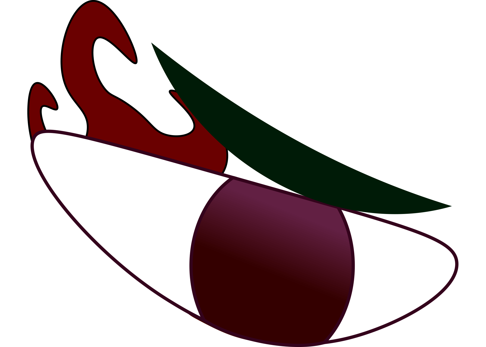

I really enjoyed this assignment in photoshop. I made a gif of an eye I made in illustrator and edit it in photoshop to add animation. Another work that I enjoyed was the neighborhood assignment in illustrator. I took a picture of my neighborhood then draw it in illustrator. Then used the color theory, using red and green. Change the hue and saturation to make this.
 Back to room